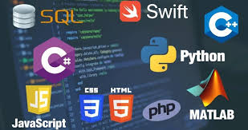

Programas software
Los programas son un conjunto de instrucciones escritas por un programador, los cuales hacen que los equipo físicos realicen una tarea específica. Existen tres tipos de software: Sistemas operativos Lenguajes de programación
 Aplicaciones informáticas
Son programas básicos que controlan los recursos del hardware. Actúan como una interfaz entre el usuario y la computadora; además sirven de enlace entre los lenguajes, las aplicaciones, la computadora y el usuario. Algunas delas funciones que realizan son:
Lenguajes artificiales que se usan para escribir las instrucciones que definen las tareas que procesará una computadora.
Se conocen también como programas de propósito específico, porque realizan tareas como procesamiento de textos, presentaciones con multimedios, administración de colecciones de datos o cálculos numéricos.